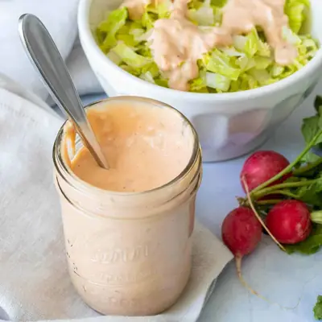

Dairy-Free Thousand Island Dressing (No Mayo!)

Ingredients
- 1½ cups raw cashews (see note)
- 1 cup unsweetened plain dairy free milk
- ¼ cup ketchup
- ¼ cup distilled white vinegar
- 1 tablespoon fresh lemon juice
- 1 – ½ teaspoon sea salt
- 1 teaspoon hot sauce
- ½ teaspoon paprika
- ¼ cup sweet pickle relish
- ¼ cup chopped red onion (, finely chopped)
Steps
- Place cashews, milk, ketchup, vinegar, lemon juice, hot sauce, paprika and salt into a blender and blend on high until nice and smooth.
- Add in the relish and onion and pulse until incorporated.
- Serve!
Recipe by Anjali Shah, from The Picky Eater. Saved here for personal use; the original has the full notes, tips and photos. Open original